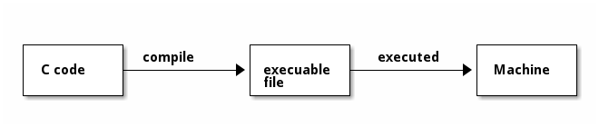
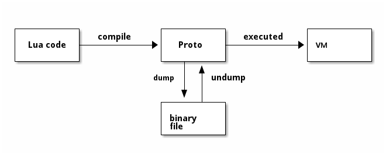

overview
1 goal
这是一本关于 lua 5.1 源代码的小书。 主要探索 lua 源代码，从中研究 lua 语言的内部实现。
起因是出于好奇和乐趣，同时希望对其它 source reader 有所启发。
lua 本身虽然只有几万行代码，但是将其所有细节都描述清楚还是要花费不少篇幅。 而且我也不自信自己的文字能力能将其含义描述清楚。
所以在本书中，
- 根据 2/8 原则，关注重点部分
- 一图胜千言，尽量使用图解
- 其余相关源代码，作为读者的练习
每一本书都有适合的读者，本书也是如此。
希望读者你
- 使用过 lua 语言，了解 lua
- 了解 Linux 基础使用
- 熟悉 C 语言
因为本书就是建立在相应的前提下书写的。
2 project
2.1 file structure
| file/dir | desc |
|---|---|
| lua-5.1.5/ | lua 源代码 |
| install/ | 编译 lua 源代码的结果，安装当前目录 |
| tool/ | 一些第三方辅助工具 |
| draft/ | 本书草稿 |
| book/ | 本书发布内容，org 格式 |
| docs/ | 本书发布内容，html 格式 |
| opcode/ | 关于 opcode 的测试代码 |
| statement/ | 关于 statement 的测试代码 |
| test/ | 关于其它功能的测试代码 |
| helper.py | gdb 脚本，辅助打印数据结构 |
| init.gdb | gdb 脚本，用作调试入口 |
| lex.gdb | gdb 脚本，实现粗糙的词法分析器 |
| publish.el | org 生成 html 的配置文件 |
| Makefile | makefile，简化一些命令调用 |
| readme.org | readme |
2.2 source code
出于方便修改源代码进行调试的原因，将 lua 5.1 source code 下载并保存在项目的 lua-5.1.5/ 目录中，
统一管理。
diff -ur /home/manjaro/temp/lua-5.1.5/Makefile ../lua-5.1.5/Makefile --- /home/manjaro/temp/lua-5.1.5/Makefile 2012-02-10 17:50:23.000000000 +0800 +++ ../lua-5.1.5/Makefile 2020-09-16 16:59:20.010277348 +0800 @@ -9,7 +9,7 @@ # Where to install. The installation starts in the src and doc directories, # so take care if INSTALL_TOP is not an absolute path. -INSTALL_TOP= /usr/local +INSTALL_TOP= $(CURDIR)/../install INSTALL_BIN= $(INSTALL_TOP)/bin INSTALL_INC= $(INSTALL_TOP)/include INSTALL_LIB= $(INSTALL_TOP)/lib diff -ur /home/manjaro/temp/lua-5.1.5/src/Makefile ../lua-5.1.5/src/Makefile --- /home/manjaro/temp/lua-5.1.5/src/Makefile 2012-02-14 04:41:22.000000000 +0800 +++ ../lua-5.1.5/src/Makefile 2020-11-18 14:45:06.879322946 +0800 @@ -8,7 +8,7 @@ PLAT= none CC= gcc -CFLAGS= -O2 -Wall $(MYCFLAGS) +CFLAGS= -m32 -ggdb3 -O0 -Wall $(MYCFLAGS) AR= ar rcu RANLIB= ranlib RM= rm -f @@ -30,7 +30,7 @@ lstrlib.o loadlib.o linit.o LUA_T= lua -LUA_O= lua.o +LUA_O= lua.o print.o LUAC_T= luac LUAC_O= luac.o print.o @@ -52,10 +52,10 @@ $(RANLIB) $@ $(LUA_T): $(LUA_O) $(LUA_A) - $(CC) -o $@ $(MYLDFLAGS) $(LUA_O) $(LUA_A) $(LIBS) + $(CC) $(CFLAGS) -o $@ $(MYLDFLAGS) $(LUA_O) $(LUA_A) $(LIBS) $(LUAC_T): $(LUAC_O) $(LUA_A) - $(CC) -o $@ $(MYLDFLAGS) $(LUAC_O) $(LUA_A) $(LIBS) + $(CC) $(CFLAGS) -o $@ $(MYLDFLAGS) $(LUAC_O) $(LUA_A) $(LIBS) clean: $(RM) $(ALL_T) $(ALL_O)
其中对 ./lua-5.1.5/Makefile 做了 1 处修改，
- 将 lua 安装目录修改到本地
./install/
其中对 ./lua-5.1.5/src/Makefile 做了 4 处修改，
- 增加编译选项
-m32使用 32 位编译-ggdb3 -O0提供更多调试信息，可调试#define宏
- 将
print.c编译到 lua 解释器中 - 使用新编译选项，编译 lua 解释器
- 使用新编译选项，编译 lua 编译器
2.3 tool
在分析代码的过程中，使用了一些三方工具。
出于方便环境配置的原因，将其拷贝放置在了 tool/ 目录中。
ChunkSpy 是一个 lua 项目，用于分析并显示由 luac 编译得来的二进制 chunk 的内部结构，
可以方便的了解编译结果，尤其是生成的字节码。
只在 /home/manjaro/temp/ChunkSpy-0.9.8 存在：5.0.2 diff -ur /home/manjaro/temp/ChunkSpy-0.9.8/5.1/ChunkSpy.lua ../tool/ChunkSpy-0.9.8/5.1/ChunkSpy.lua --- /home/manjaro/temp/ChunkSpy-0.9.8/5.1/ChunkSpy.lua 2006-03-07 18:56:48.000000000 +0800 +++ ../tool/ChunkSpy-0.9.8/5.1/ChunkSpy.lua 2020-10-30 11:55:50.229435825 +0800 @@ -1631,8 +1631,8 @@ FormatLine(1, "numparams ("..func.numparams..")", pos + 1) FormatLine(1, "is_vararg ("..func.is_vararg..")", pos + 2) FormatLine(1, "maxstacksize ("..func.maxstacksize..")", pos + 3) - BriefLine(string.format("; %d upvalues, %d params, %d stacks", - func.nups, func.numparams, func.maxstacksize)) + BriefLine(string.format("; %d upvalues, %d params, %d is_vararg, %d stacks", + func.nups, func.numparams, func.is_vararg, func.maxstacksize)) BriefLine(string.format(".function%s%d %d %d %d", config.DISPLAY_SEP, func.nups, func.numparams, func.is_vararg, func.maxstacksize))
同样的，对源代码做了些许修改
- 删除不需要的 5.0.2 版本代码
- 增加显示
is_vararg字段
ditaa 是一个命令行工具，用于将 ascii art 图形转化为图片，用于生成大部分图解图片。
lua-gdb-helper 是一个 gdb 脚本项目，用于辅助调试，打印关键数据结构。
在进行本书编写过程中，借鉴了其中的思想，使用 gdb 提供的 python api，
编写了 helper.py 来辅助显示数据结构。
2.4 usage
在分析代码的过程，经常使用一些分析过程，全部整理在 Makefile 中。
在此做一些介绍，对理解代码是非常有用的。
2.4.1 compile
$ make compile
在 linux 系统上，使用 gcc 编译 lua 源代码，生成
- lua 解释器
./lua-5.1.5/src/lua - lua 编译器
./lua-5.1.5/src/luac
并将相关文件安装到 ./install 目录
$ make clean
删除 gcc 编译生成结果
2.4.2 run
$ make lua
交互模式，执行 lua 解释器
$ make run source=opcode/move.lua
使用 lua 解释器执行文件 opcode/move.lua
2.4.3 inspect
$ make lex source=opcode/move.lua
对文件进行词法分析
$ make spy
交互模式，执行 ChunkSpy
$ make inspect source=opcode/move.lua
使用 ChunkSpy 分析文件
2.4.4 debug
$ make debug source=opcode/move.lua
开始调试文件，临时断点在 function chunk()
2.4.5 publish
3 big picture
3.1 source file
在阅读源代码之前，先对相关代码文件有一个总体感觉。
lua 源代码的核心文件都在 ./lua-5.1.5/src/ 目录，
按照本书目录的顺序，将相关文件列示如下。
| file | prefix | desc |
|---|---|---|
| Makefile | makefile | |
| llimits.h | 部分常量与类型定义 | |
| luaconf.h | lua 核心配置文件，提供部分功能定制 | |
| lua.h | 主要头文件，提供对外的接口 | |
| lua.c | lua 解释器 | |
| luac.c | lua 编译器 | |
| print.c | 提供打印 chunk 的方法，用于 luac -l |
|
| lobject.h | luaO | 定义基础数据类型，及相关宏操作 |
| lobject.c | luaO | - |
| lmem.h | luaM | mem 功能 |
| lmem.c | luaM | - |
| lstring.h | luaS | string 功能 |
| lstring.c | luaS | - |
| ltable.h | luaH | table 功能 |
| ltable.c | luaH | - |
| ltm.h | luaT | metatable(tag method) 功能 |
| ltm.c | luaT | - |
| lzio.h | luaZ | buffer & stream 功能 |
| lzio.c | luaZ | - |
| llex.h | luaX | lexer 功能 |
| llex.c | luaX | - |
| lparser.h | luaY | parser 功能 |
| lparser.c | luaY | - |
| lopcodes.h | luaP | opcode 定义及相关宏操作 |
| lopcodes.c | luaP | - |
| lcode.h | luaK | code 模块，用于生成 opcode |
| lcode.c | luaK | - |
| lfunc.h | luaF | Proto, Closure, Upval 相关的基础操作 |
| lfunc.c | luaF | - |
| ldo.h | luaD | 调用 Lua/C Closure |
| ldo.c | luaD | - |
| lstate.h | luaE | lua_State, global_State 相关定义与操作 |
| lstate.c | luaE | - |
| lvm.h | luaV | vm 功能 |
| lvm.c | luaV | - |
| lapi.h | luaA | api 功能，提供对外 api 接口的实现 |
| lapi.c | luaA | - |
| lauxlib.h | luaL | 为 lua lib 提供基础方法 |
| lauxlib.c | luaL | - |
| lualib.h | 定义 lua std lib 的注册接口 | |
| linit.c | luaL | 实现注册所有 std lib 方法 |
| lbaselib.c | luaB | base lib，实现 print, next, etc 及 coroutine.* 接口 |
| loadlib.c | package lib，实现 require, moduel 及 package.* 接口 | |
| ltablib.c | table lib，实现 table.* 接口 | |
| liolib.c | io lib，实现 io.* 接口 | |
| loslib.c | os lib，实现 os.* 接口 | |
| lstrlib.c | string lib，实现 string.* 接口 | |
| lmathlib.c | math lib，实现 math.* 接口 | |
| ldblib.c | debug lib，实现 debug.* 接口 | |
| ldebug.h | luaG | debug 功能，用于自省 |
| ldebug.c | luaG | - |
| lgc.h | luaC | gc 功能 |
| lgc.c | luaC | - |
| lundump.h | luaU | dump/undump 功能，chunk 的保存与加载 |
| lundump.c | luaU | - |
| ldump.c | luaU | - |
大部分模块，都有对应的 .h .c 文件，
大致来看， .h 定义数据结构，宏操作，及函数接口， .c 实现函数接口。
两者协同提供一个模块功能，所以相关的文件描述用 - 来代替了。
模块 .h 文件中定义的函数接口，是可以被其它模块引用的。
lua 内部使用了一种命名约定，不同模块的函数接口用不同的前缀来标识，
在上表中的 prefix 列已经列示。
当然，上面的规则不是绝对的，存在部分例外，在阅读时不必严格拘束于此。
3.2 execution
同是编程语言，必定有相似的地方。 下面从 C 语言的角度，粗略类比 Lua 语言的执行过程。

C 代码通过编译过程，生成可执行文件；可执行文件被机器执行，达成 C 代码描述的语义。

Lua 语言通过 compile dump 过程，生成特定格式的二进制文件； 二进制文件可以被加载，并在 VM 中执行，达成 Lua 代码描述的语义。
如果抽象来看，编程语言是一种语言，一种文本约定，描述程序的语义。 实现语义的程序，称之为编程语言的实现。
C（语言）通过 gcc（实现）来达成语义，同样地，Lua（语言）需要一个（实现），才能达成语义。
./lua-5.1.5/src/ 就是这个实现的全部内容。
虽然大体流程相似，作为编译型语言的 C 和解释型的 Lua 还是存在些许不同。
C 语言直接编译为面向机器的指令，整体是静态的，一次性全部编译完成，整体加载运行。
Lua 语言的编译面向 VM，生成 opcode 交由 VM 来执行，VM 则由 Machine 来执行，整体多了一层中间层 VM。
lua 源代码 make 之后，生成两个可执行文件
lua, lua standalone interpreterluac, lua compiler
luac 程序执行的就是 compile + dump 的过程
lua 程序根据参数不同，可能会执行
- compile + executed 过程
- undump + executed 过程
- VM 常驻内存，使用 REPL 的方式，不断输入 lua code，执行 compile + executed 的解释过程
这即是上文中两个程序分别称为编译器 和 解释器 的命名来源，以后的行文中也使用这种约定。
4 practice
- 按照 source file 章节中提到的文件顺序，粗略浏览所有代码